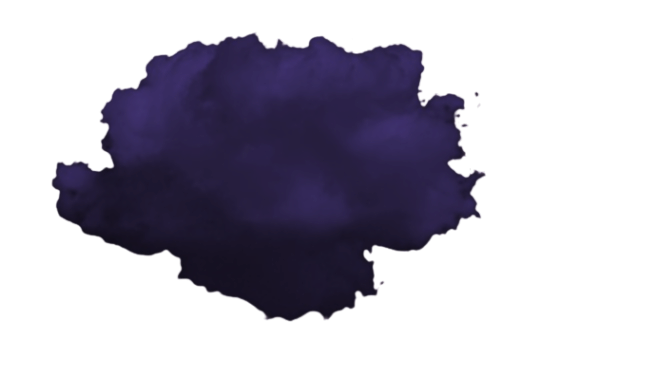

Les Origines d'Astralis : La divinité du Cosmos, Nephyra, fut le premier être avant même l'Univers. Elle naquit dans le vide primordial, une entité encore infantile, incapable de comprendre sa propre existence. Ses premiers gestes furent instinctifs : en remuant son énergie brute, elle façonna sans le vouloir les premières particules, les premières lueurs, les premiers courants du cosmos. Ainsi, le cosmos d'Astralis prit forme inconsciemment, comme un dessin tracé par une main qui ignore encore ce qu'elle crée.
Des millénaires plus tard, Nephyra grandit. L'ennui s'installa dans l'immensité qu'elle avait engendrée sans en avoir conscience. Pour se distraire, elle imagina un jeu : un monde vivant, complexe, capable de l'occuper et de la surprendre.
Alors, elle créa les Divinités. Chacune reçut un tempérament distinct, une fonction précise, un pouvoir unique. Elles furent pensées comme les pièces d'un jeu cosmique : créateurs, destructeurs, gardiens… Sous leur impulsion, les premières terres apparurent, puis les îles, puis les continents. Astralis devint leur terrain d'expression, un monde façonné par leurs volontés divergentes.